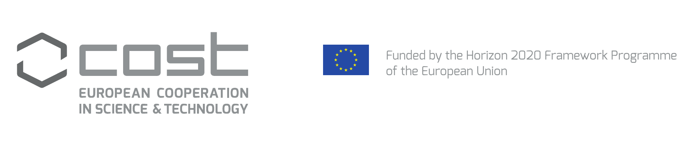
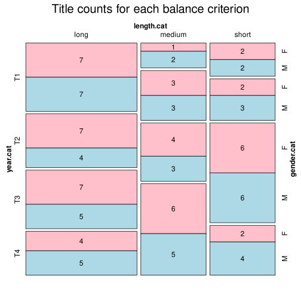
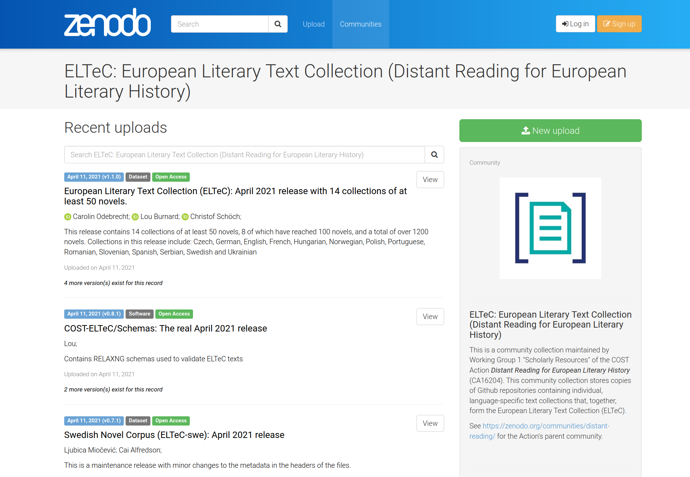

# Création, publication et analyse d'un corpus multilingue encodé en TEI : le cas de la European Literary Text Collection <img data-src="img/basics/distant-reading_logo.png" height="40"></img> <br/><br/> **Christof Schöch (Trèves, Allemagne)** <br/> *** EThAP, ENS de Lyon, 30 mai 2023 <br/>https://distantreading.github.io/eltec-slides/ *** <img data-src="img/basics/tcdh-slim.png" height="50"></img> </img> </img> :: - Bonjour à tout le monde - C'est un plaisir d'être parmi vous. - Je parlerai de "ELTeC" - C'est un projet d'édition de ressources textuelles multilingues. -- ### Plan 1. [Qu'est-ce qu'ELTeC ?](#/2) 2. [Critères de composition du corpus](#/3) 3. [Principes d'encodage du texte](#/4) 4. [Publication d'ELTeC](#/5) 4. [Scénarios d'usage d'ELTeC](#/6) 5. [Conclusion](#/7) :: - Je me propose donc de vous présenter ELTeC, - le corpus multilingue de romans européens. - Je parlerai des critères de composition - Et, plus brièvement des principes d'encodage du texte - Et de la stratégie de publication; - En revanche, je parlerai un peu plus des scénarios d'usage d'ELTeC, - avant de conclure. -- ## (1) Qu'est-ce qu'ELTeC ? :: - Qu'est-ce que donc ELTeC ? - Bon, l'abréviation veut dire "European Literary Text Collection" - C'est une ressource qui reste en développement même après la fin de l'Action COST --- ### ELTeC en contexte * COST Action "Distant Reading for European Literary History" <!-- .element: class="fragment fade-in-then-semi-out" data-fragment-index="1" --> * Réseau de recherche (31 pays, 200+ chercheurs et chercheuses) * Objectif: Relancer la recherche numérique multilingue sur l'histoire du roman européen * Domaines d'activité: <!-- .element: class="fragment fade-in-then-semi-out" data-fragment-index="2" --> * Créer un corpus multilingue du roman européen * Développer des méthodes de recherche numériques appropriées * Réflexion sur les conséquences théoriques * Création d'un réseau de recherche à travers l'Europe * 'Capacity building': formations, échanges, projets :: - L'Action COST en question est intitulée "Distant Reading for European Literary History" --- ### "European Literary Text Collection" * Un corpus multilingue du roman européen <!-- .element: class="fragment fade-in-then-semi-out" data-fragment-index="1" --> * Pour la période 1840 à 1920 * Au moins 10 langues différentes * Collections comparables de 100 romans pour chaque langue * Caractéristiques-clés <!-- .element: class="fragment fade-in-then-semi-out" data-fragment-index="2" --> * Corpus représentant la variété de la production * Textes encodés en XML-TEI et annotés * Corpus publiés sous licence ouverte * Plus d'informations <!-- .element: class="fragment fade-in-then-semi-out" data-fragment-index="3" --> * http://www.distant-reading.net/eltec/ * Dernier 'release': [v1.1.0, Avril 2021, 1200 romans](https://github.com/COST-ELTeC/ELTeC) * Actuellement: 1200 (core) + 338 (plus) + 547 (extension) = 2085 romans --- ### Progrès du travail sur ELTeC <a href="img/eltec-overview-2023_core.png"></img></a> <br/><small>Voir: https://distantreading.github.io/ELTeC/</small> :: - Cliquer pour voir le "core" en plus grand - Lien pour la version interactive -- ## (2) Critères de composition des corpus --- ### Critères de pertinence * Romans (= prose narrative fictionelle d'une certaine longueur) * Longueur minimale: 10.000 mots * Romans en langue originale * Romans parus en Europe --- ### Critères de composition * Objectifs <!-- .element: class="fragment fade-in-then-semi-out" data-fragment-index="1" --> * Comparabilité des collections * Représenter la variabilité de la production romanesque * Aller au-delà des textes canonisés * Critères inclus <!-- .element: class="fragment fade-in-then-semi-out" data-fragment-index="2" --> * Période de parution : 1840-59, 1860-79, 1880-99, 1900-1919 * Longueur du texte : short (10-50k), medium (50-100k), long (100k+) * Sexe de l'auteur(e) : masculin, féminin, divers/mixte * Réimpressions 1970-2010: low (0-1), high (2+) * Romans par auteur(e) : 9-11 x 3, sinon 1 --- #### Composition des collections </img> <img data-src="img/mosaic-rom.svg" height="400"></img> <small> |ELTeC-eng|||ELTeC-rom| |:---:|:---:|:---:|:---:| |100 romans | | | 100 romans| |EC5 100 | | | EC5 83| |excellente balance | || balance difficile à obtenir| </small> --- #### Le paradoxe de la diversité <a href="img/eltec-overview_paradox.png"><img data-src="img/eltec-overview_paradox.png" height="400"></img></a> * Trois objectifs * comparabilité des collections (=> critères stricts) * variété des textes (=> critères stricts) * variété des traditions littéraires (=> critères souples) :: - On a essayé de réduire les effets du paradoxe en ayant des critères ambitieux mais assouplis - C'est d'ailleurs un dilemme récurrent : avec plusieurs langues, tout est plus difficile ; on fait donc presque forcément des choses techniquement moins avancées ; mais pas moins intéressantes ou complexes. -- ## (3) Principes d'encodage des textes --- ### Trois niveau d'encodage * L'encodage en XML-TEI va de soi <!-- .element: class="fragment fade-in-then-semi-out" data-fragment-index="1" --> * Il y a un 'header' commun <!-- .element: class="fragment fade-in-then-semi-out" data-fragment-index="2" --> * Les trois niveaux <!-- .element: class="fragment fade-in-then-semi-out" data-fragment-index="3" --> * Level 0: encodage TEI minimal (métadonnés + `div`, `p`, `hi`) * Level 1: encodate TEI sémantique (`foreign`, `emph` etc.) * Level 2: encodage TEI avec annotation au niveau des token (UPos) * Contrôlés par des schémas <!-- .element: class="fragment fade-in-then-semi-out" data-fragment-index="4" --> * Système de schemas enchaînés * Validation avec RelaxNG et Schématron --- ### Métadonnées * Critères de composition (voir ci-dessus) <!-- .element: class="fragment fade-in-then-semi-out" data-fragment-index="1" --> * Provenance <!-- .element: class="fragment fade-in-then-semi-out" data-fragment-index="2" --> * source numérique * source imprimée * première édition * Type de roman <!-- .element: class="fragment fade-in-then-semi-out" data-fragment-index="3" --> * Forme narrative (rarement) * Sous-genre du roman (très rarement) * Caractéristiques textuels <!-- .element: class="fragment fade-in-then-semi-out" data-fragment-index="4" --> * Langue * Orthographe (originale, modernisée) * Alphabet (latin, cyrillique, de transition) * Niveau d'encodage (voir ci-dessus) :: - On renviendra à la question des sous-genres et des formes narratives dans la partie sur "Mining and Modeling Text" -- ## (4) Publication d'ELTeC --- ### Stratégie de publication * Pour les besoins du projet <!-- .element: class="fragment fade-in-then-semi-out" data-fragment-index="1" --> * Espace de collaboration (XML) : [Github](https://github.com/cost-eltec) * Publication de 'releases' avec DOI (XML) : Github + [Zenodo](https://zenodo.org/communities/eltec/) * Apercu d'ensemble (HTML, XML) : [Github.io](https://distantreading.github.io/ELTeC/) * Plateformes de publication (en plus de Zenodo): <!-- .element: class="fragment fade-in-then-semi-out" data-fragment-index="2" --> * [TEI Publisher](https://teipublisher.com/exist/apps/eltec/index.html) * [GAMS](http://glossa.uni-graz.at/context:eltec) * [TextGrid](https://dev.textgridrep.org/browse/3tg6g.0) * D'autres formats de publication <!-- .element: class="fragment fade-in-then-semi-out" data-fragment-index="3" --> * Fichier à télécharger, pour l'analyse avec des outils comme TXM ou Antconc * Publication via des plateformes d'analyse comme TEI:TOK --- #### Github <img data-src="img/eltec_github.png" height="500"></img> https://github.com/cost-eltec --- #### Zenodo </img> https://zenodo.org/communities/eltec/ --- #### TEI Publisher <img data-src="img/eltec_teip.png" height="500"></img> https://teipublisher.com/exist/apps/eltec/index.html --- #### TEI:TOK </img> https://quest.ms.mff.cuni.cz/teitok-dev/teitok/eltec/index.php -- ## (5) Scénarios d'usage d'ELTeC --- ### Quelques scénarios * Objectifs partagées <!-- .element: class="fragment fade-in-then-semi-out" data-fragment-index="1" --> * Adapter des méthodes existantes du "Distant Reading" aux multiples langues européennes * Evaluer les méthodes dans un context multilingue * Quelques exemples <!-- .element: class="fragment fade-in-then-semi-out" data-fragment-index="2" --> * Annotation linguistique à travers de multiples langues: Cínkova et al. 2020 * Annotation multilingue des entités nommées: Frontini et al. 2020 * Identification du discours direct: Byszuk et al. 2020 * Analyse des titres: Patras et al. 2021 * Méthodes d'attribution stilométrique: Schöch et al. * Verbes de l'intériorité à travers le temps : Radak et al. * Longueur des phrases à travers le temps : Schöch 2022 --- ### Identification du discours direct <img data-src="img/byszuk-2020.png" height="400"></img> * Résultats-clés * Emploi d'un "multilingual sentence embedding" * Résultat: score F1 ~ 0.89 pour neuf langues --- ### Analyse des titres <img data-src="img/patras-2021_annotation.png" width="500"></img> <br/><img data-src="img/patras-2021_lengths.png" width="500"></img> --- ### Stilométrie: Evaluation <a href="img/results_ELTeC-hun.svg"><img height="200" data-src="img/delta-hun.png"></a></img> <a href="img/results_ELTeC-fra.svg"><img height="200" data-src="img/delta-fra.png"></img></a><br/><a href="img/results_ELTeC-rom.svg"><img height="200" data-src="img/delta-rom.png"></a></img> <a href="img/results_ELTeC-slv.svg"><img height="200" data-src="img/delta-slv.png"></img></a><br/><br/>(Actuellement: deu, eng, fra, hun, por, rom, slv) --- ### Longueur des phrases, 1840-1920 </img> </img> Allemand (21=>15\*\*\*) vs. French (23=>19, ns) --- ### Verbes de l'intériorité </img> Trois corpus (pour le français), dont ELTeC-fra (core+ext) -- ## Conclusion --- ### Qu'est-ce qu'ELTeC, alors ? * Bien sûr, une ressource multilingue <!-- .element: class="fragment fade-in-then-semi-out" data-fragment-index="1" --> * Un processus d'apprentissage de la recherche collaborative <!-- .element: class="fragment fade-in-then-semi-out" data-fragment-index="2" --> * Un point de ralliement pour une communauté européenne, multilingue <!-- .element: class="fragment fade-in-then-semi-out" data-fragment-index="3" --> * Un point d'appui pour le développement de méthodes numériques <!-- .element: class="fragment fade-in-then-semi-out" data-fragment-index="4" --> * Un début modeste pour une histoire littéraire européene qui soit numérique, inclusive, multilingue <!-- .element: class="fragment fade-in-then-semi-out" data-fragment-index="5" --> --- ### Un grand merci ! <img height="500" data-src="img/danke.png"> --- ### Références bibliographiques <small> * Création d'ELTeC (choix) * Lou Burnard, Christof Schöch, Carolin Odebrecht: “In Search of Comity: TEI for Distant Reading”, in: _Journal of the Text Encoding Initiative_, 2021. https://doi.org/10.4000/jtei.3500 * Christof Schöch, Roxana Patraș, Diana Santos, Tomaž Erjavec: “Creating the European Literary Text Collection (ELTeC): Challenges and Perspectives”, in: _Modern Languages Open_ (forthcoming). Preprint: https://doi.org/10.5281/zenodo.4742419 * Cinková, Silvie, Tomaž Erjavec, Cláudia Freitas, et al., ‘Evaluation of Taggers for 19th-Century Fiction’, in DH_Budapest_2019, <http://elte-dh.hu/dh_budapest_2019-abstract-booklet/> * Frontini, Francesca, Carmen Brando, Joanna Byszuk et al., ‘Named Entity Recognition for Distant Reading’, in CLARIN Annual Conference 2020 Proceedings, pp. 27–41 <https://office.clarin.eu/v/CE-2020-1738-CLARIN2020_ConferenceProceedings.pdf> <br/><br/> * Utilisations d'ELTeC (choix) * Cinková, Silvie, and Jan Rybicki, ‘Stylometry in a Bilingual Setup’, in Proceedings of LREC 2020, pp. 977–984 <https://www.aclweb.org/anthology/2020.lrec-1.123/> * Byszuk, Joanna, Michał Woźniak, Mike Kestemont et al. ‘Detecting Direct Speech in Multilingual Collection of 19th Century Novels’, in Proceedings of LT4HALA 2020, pp. 100–104 <https://lrec2020.lrec-conf.org/media/proceedings/Workshops/Books/LT4HALAbook.pdf> * Mihurko-Poniž, Katja, Rosario Arias, J. Berenike Herrmann et al. ‘Thresholds to the “Great Unread”: Titling Practices across Multilingual Collections of European Novels’, Day of DH 2021, <https://www.youtube.com/watch?v=fMtkwCxkzfw>. </small>